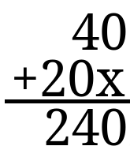

Comencemos
La multiplicacion es muy facil pero es MUY importante!
La multiplicacion es lo mismo que sumar varias veces con el mismo numero
Y, Cual es el Signo de la Multiplicacion?
x
Veamos esta multiplicacion,
3 x 4
Lo que tenemos que hacer es sumar el numero 3, 4 veces,
3 + 3 + 3 + 3
Osea, 12
Facil, o no?
Antes de usarlos, tienes que conocerlos!
Veamos la multiplicacion 2 x 8 = 16
Pero no te apures! Aun hay mas por saber!
Multiplicacion con 2 Cifras
Imaginemos que quieres comprar 20 Skibidi Toilets, y cada uno vale 12 Pesos
Entonces serian 20 x 12
Se empieza siempre por la unidad del numero que esta a la derecha, en este caso el 12
Y ese digito multiplica todo el numero que esta a la izquierda, que en este caso seria el 20
20 x 2
40//
Luego sigue la decena, que ahora es 1, y ese digito tambien multiplica a todo el numero de la izquierda
20 x 1
20//
entonces se suman los 2 resultados,
 Lo que nos da de resultado 240!!Osea que 20 x 12 = 240
Division
Veamos un Ejemplo:
Si tengo doce dulces Suny, y los reparto entre 3 niños. Cuantos dulces recibe cada uno?
Lo que podemos hacer es repartir la misma cantidad de dulces a los 3 niños, hasta que no nos quede ninguno
asi veras que cada niño recibe 4 Suny's
Esto se escribe asi
12 : 3 = 4
Aqui, el Doce es llamado Dividendo. El 3 se le llama divisor. Y por ultimo el 4 se llama cociente
Aun no esta claro? No te preocupes!
Se puede ver a la division como una multiplicacion, pero al reves!
Antes, veiamos que 3 x 4 = 12, osea que 3 + 3 + 3 + 3 repetido cuatro veces es igual a Doce
Ahora veamos su division. 12 / 4 = ?
Esto lo podemos ver como: Que numero sumado a si mismo 4 veces nos da 12?
Esto se puede escribir como multiplicacion asi: ? x 4 = 12
Y, Que son las mitades?
Cuando tu tienes que dividir algo en 2 partes iguales, esas partes se les llama "Mitades"
Entonces, si tu tienes un sandwich y lo partes a la mitad, estas haciendo una division!
Tu estas tomando ese pan, y dividiendolo entre 2